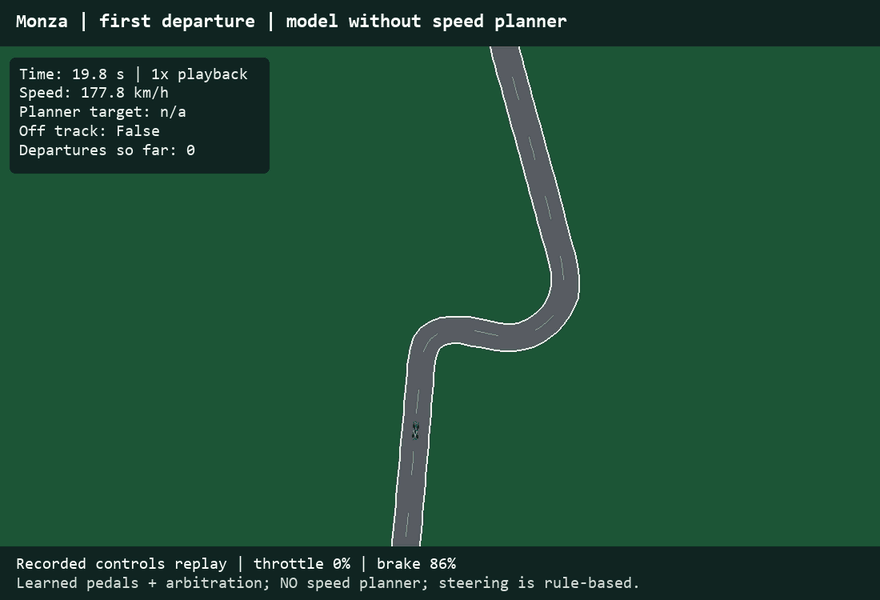
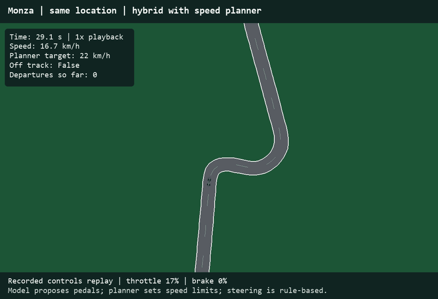
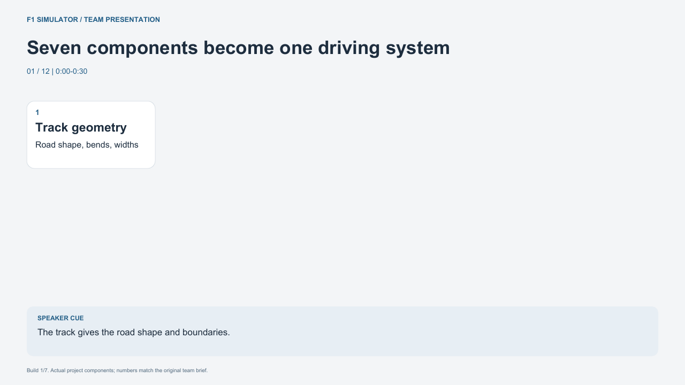

01_no_speed_planner.gif
Section 7: what if the model chose the pedals?

The PDF is the single team handoff. These clips replace its stills when you build the final slides. All driving clips are independent recorded-control simulator replays.
Section 7: what if the model chose the pedals?

Section 8: what if we added speed assistance?

Section 9: what if the models chose all controls?

Optional demonstration of the complete Monza learned-driver lap, nominal 10x playback.

Section 11: actual Silverstone transfer replay; not Spa footage.

Optional seven-component summary animation; the main PDF now carries the components through the story section by section.
